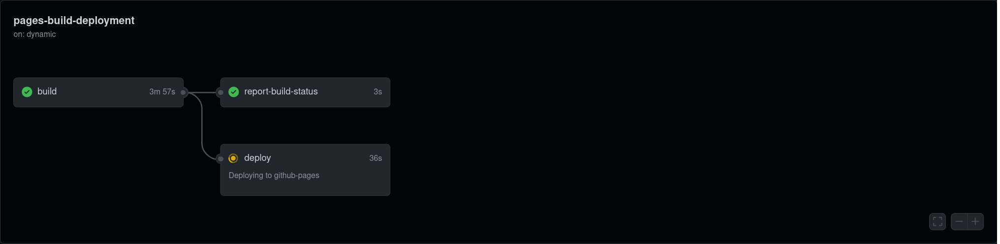
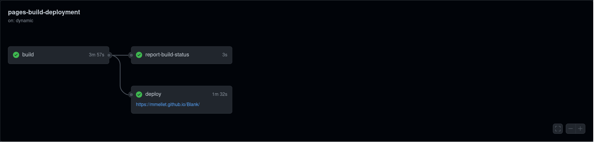
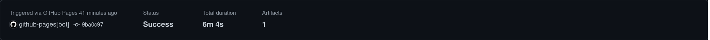

C'est un problème présent depuis le tout début.
C'est une ligne dans ma ToDo.
C'est
L’implémentation technique d’une déconstruction. #
C'est plus concrètement un bug que je n'ai pas réglé
En l’état mon site est sur un repo Github. Après chaque modification, je pull, add, commit, push sur ce repo.
Chaque push fait se relancer une machine qui rebuild sur l’adresse https://mmellet.github.io/Blank.
 
Le temps de la déconstruction #
- build : 3m57
- report-build-status : 3s
- deploy : 1m32
// DNS check, - 7 secondes //
- build : 4m3
- report-build-status : 2s
- deploy : 1m32

Cette latence, où mon site est à un endroit puis à un autre, varie de 5 à 10 secondes selon que j’encourage ma machine ou que je la gronde.
Deni technique #
J’aimerai écrire ici que ça a été pensé comme tel, et même que ça a pensé seul, que c’est une preuve de concept et non un accident ou un manque de connaissance de ma part. Ce n’est pas que je trouve du sens à ce build², au contraire je le trouve bien plus signifiant : mon site fait peau neuve, je revis le lancement et son stress à chaque ajout.
Don’t look through.